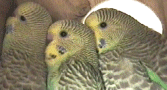
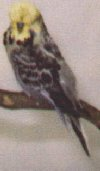
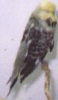

|  | |
|
|
Thank
you to everybody who answered our Issue 3 Survey on Short Tail Disease. SHORT TAIL DISEASE In this survey we tried to determine the spread of this disease. 'Short Tail Disease' is when some birds never grow their main primary tail feathers and others during their first moult drop these feathers and never regrow them. SURVEY RESULTS ARE UNDER PICTURE   THE RESULTS We had 16 replies to this survey, and out of these there where 2555 Budgerigars breed, and 26 of these had developed Short Tail Disease, this meant that: FOR EVERY 170 BIRDS BREAD, THERE IS A POSSIBILITY THAT 2 OF THEM WILL DEVELOP SHORT TAIL DISEASE We also asked if people believed that this disease was linked to French
Moult. Here are some interesting comments we received from this survey: [1] I personally believe it is a mild form of French Moult which only affects the bird in the tail area. [2] The one and only short tail bird I've produced came from a bird I bought which had excellent qualities yet had a short tail. [3] We call it "feather cysting".Often the
feathers will keep growing in but drop out before fully developed and also appear withered
as if feather was receiving inadequate blood supply for development. [4] Actually we got 2 birds with this disease, after 3
years of breeding budgies, I think it has something to do with the french moult, cause in
the clutch he was born, his brother developed the french moult, and when he moult his tail
feathers never grew up. I really didn't know of this disease, I thought it was french
moult. [5] Possibility of French moult link ie partial affectation. feathers seem to be weak. Have checked roots for stubs. [6] 1. Yes, it could be 1 type of FM. [7] Psittacine Beak and Feather Disease.suggest you contact Ross Perry. His research into PBFD suggests that they are related. Ross is a well known avian specialist. Ross was the Vet. who named and realised that it was a virus and started all the research. |
Click HERE to return to the BCT Library
|